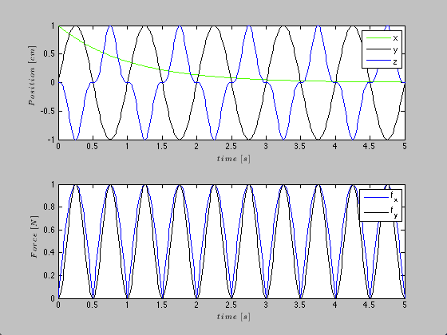
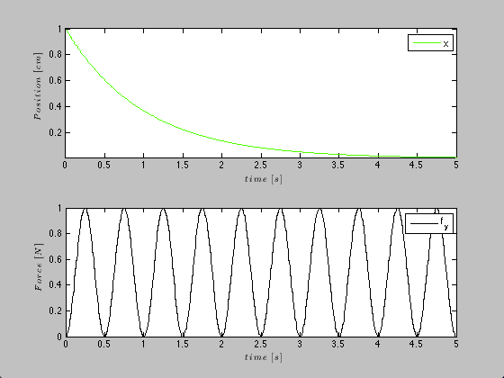

Test CovColl
close all; load CovariateSample.mat; cc=CovColl({position,force}); figure; cc.plot; %plots all covariates and their components cc.getCov(1); %returns position; cc.getCov('Position'); cc.getCov({'Position','Force'}); cc.resample(200); %resamples both position and force cc.setMask({{'Position','x'},{'Force','f_y'}}); figure; cc.plot; %plot only x and f_y; % dataToMatrix % setMaxTime % setMinTime % removeCovariate % nActCovar 